자동차정비기능장 (2004-04-04 기출문제)
1과목: 임의구분
1. 직렬 4행정 1사이클 8기통 엔진은 몇 도마다 폭발 행정이 일어나는가?
- 90°
- 120°
- 180°
- 360°
(정답률: 74%)

2. 무연 휘발유의 구비 조건으로 알맞는 것은?
- 앤티 노크성이 작을 것
- 발열량이 작을 것
- 연소 퇴적물 발생이 적을 것
- 공기와 잘 혼합되고 휘발성이 없을 것
(정답률: 64%)
3. 실린더 총 배기량이 1500cm3, 연소실 체적이 200cm3인 단기통 기관의 압축비는 얼마인가?
- 6.5 : 1
- 7.5 : 1
- 8.5 : 1
- 9.5 : 1
(정답률: 25%)
4. 압축 또는 폭발 행정시 가스가 피스톤과 실린더 사이에서 누출되는 현상은?
- 블로우 백(blow back)
- 블로우 다운(blow down)
- 블로우 바이(blow by)
- 베이퍼 록(vapour lock)
(정답률: 87%)
5. 기관이 고속에서 회전력의 저하를 가져오는 이유는?
- 관성에 의해서 점화시기가 너무 진각되기 때문이다.
- 충전 효율이 너무 높기 때문이다.
- 체적효율이 낮아지기 때문이다.
- 혼합비가 너무 농후하기 때문이다.
(정답률: 65%)
6. 지르코니아 O2센서의 설명 중 틀린 것은?
- 백금전극을 보호하기 위해 전극 외측에 세라믹을 도포한다.
- 센서 내측에는 배출가스를, 외측에는 대기를 도입한다.
- 지르코니아 소자는 내외면의 산소 농도차가 크면 기전력을 발생한다.
- 산소 농도 차이가 클수록 기전력의 발생도 커진다.
(정답률: 82%)
7. 전자제어 가솔린 기관에서 피드백 제어가 해제되는 경우가 아닌 것은?
- 전부하 출력시
- 연료 차단시
- 희박 신호가 길게 계속될 때
- 냉각 수온이 높을 때
(정답률: 66%)
8. 윤활유의 구비조건으로 맞지 않는 것은?
- 알맞은 점성을 가질 것
- 카아본 생성이 적을 것
- 열에 대한 저항력이 없을 것
- 부식성이 없을 것
(정답률: 91%)
9. 어느 기관의 냉각수는 규정량이 18ℓ 이다. 사용 중에 주입된 냉각수 양이 15ℓ 였다면 라디에이터 코어 막힘률은 몇 %인가?
- 16.7
- 17.7
- 18.7
- 19.7
(정답률: 70%)
10. 디젤기관 분사펌프의 딜리버리 밸브의 역할과 가장 거리가 먼 것은?
- 고압 파이프 내 연료의 잔압을 유지
- 분사펌프의 연료분사량을 증감
- 연료의 역류방지
- 후적을 방지
(정답률: 82%)
11. 다음의 소구기관 특징 중 관계가 없는 것은?
- 연료 소비율이 낮다.
- 단위 마력당 중량이 크다.
- 구조가 간단하고 제작이 용이하다.
- 소형 화물선 등에 많이 쓰인다.
(정답률: 60%)
12. 기관의 비출력을 높이기 위한 방법 중의 하나로서 실린더 내에 흡입되는 공기량을 증가시키는 방법이 최근 많이 사용되고 있는데 다음 중에서 관계가 없는 것은?
- 터보챠저 장착
- 슈퍼챠저 장착
- DOHC 방식 채용
- 다점분사방식 채용(MPI)
(정답률: 75%)
13. 실린더 블럭이나 헤드의 변형도 측정기구는?
- 마이크로미터
- 버어니어캘리퍼스
- 다이얼 게이지
- 직각자와 필러 게이지
(정답률: 78%)
14. 배기 배출물의 정화에 사용되는 촉매의 설명 중 맞는 것은?
- 산화촉매는 배기중의 NOx를 환원시켜 N2와 CO2로 만든다.
- 산화촉매는 배기중의 CO와 HC를 산화시켜 CO2와 H2O로 만든다.
- 3원촉매는 배기중의 SOx, HC, NOx를 동시에 하나의 촉매로 처리한다.
- 3원촉매는 배기중의 SOx, CO, NOx를 동시에 하나의 촉매로 처리한다.
(정답률: 79%)
15. 전자제어 기관에서 연료압력 조절기는 무엇과 연계하여 연료압력을 조절하는가?
- 압축압력
- 흡기다기관 압력
- 점화시기
- 냉각수 온도
(정답률: 83%)
16. 그림은 엔진이 정상적인 난기 상태에서 정화장치(촉매)앞, 뒤에 설치된 산소센서 출력이다. 설명 중 옳은 것은?
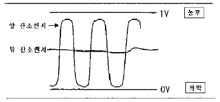
- 정화장치(촉매) 고장이다.
- 뒤쪽에 설치된 산소센서 고장이다.
- 정화장치(촉매)가 정상적인 작용을 하고 있다.
- 앞쪽 산소센서가 정상적으로 동작할 때 뒤쪽 산소 센서는 동작을 멈춘다.
(정답률: 70%)
17. 그림은 ECU가 발전기 전류를 제어하는 회로도이다.(그림에서 엔진가동시 ECU B20번 단자에서는 크랭크각 센서 1주기에서 FR신호를 입력 받는다.) 회로 설명 중 거리가 먼 것은? (문제 오류로 실제 시험에서는 모두 정답처리 되었습니다. 여기서는 1번을 누르면 정답 처리 됩니다.)
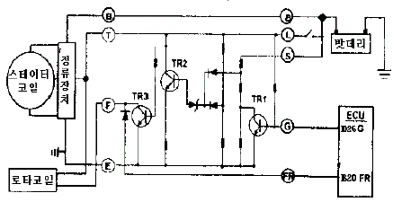
- TR3가 동작할 땐 발전중이다.
- TR2가 동작되면 TR3가 동작한다.
- TR1이 동작할 때 TR2는 동작하지 않는다.
- ECU D26단자가 접지되지 않으면 TR1이 동작한다.
(정답률: 43%)
18. 자동차용 LPG의 갖추어야할 조건으로 틀린 것은?
- 적당한 증기압(1~20kgf/cm2)을 가져야 한다.
- 불포화(올레핀계)탄화수소를 함유하지 말아야 한다.
- 가급적 불순물이 함유되지 말아야 한다.
- 프로필렌, 부틸렌 등의 함유가 충분히 많아야 한다.
(정답률: 79%)
19. 샘플링 검사의 목적으로서 틀린 것은?
- 검사비용 절감
- 생산공정상의 문제점 해결
- 품질향상의 자극
- 나쁜 품질인 로트의 불합격
(정답률: 34%)
20. 월 100대의 제품을 생산하는데 세이퍼 1대의 제품 1대당 소요공수가 14.4 H 라 한다. 1일 8 H, 월 25일, 가동한다고 할 때 이 제품 전부를 만드는데 필요한 세이퍼의 필요대 수를 계산하면? (단,작업자 가동율 80 %, 세이퍼 가동율 90 % 이다.)
- 8대
- 9대
- 10대
- 11대
(정답률: 45%)
2과목: 임의구분
21. 다음의 PERT/CPM에서 주공정(Critical path)은? (단, 화살표 밑의 숫자는 활동시간을 나타낸다.)
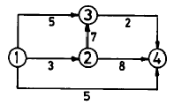
- ① - ③ - ② - ④
- ① - ② - ③ - ④
- ① - ② - ④
- ① - ④
(정답률: 46%)
22. 제품공정분석표에 사용되는 기호 중 공정간의 정체를 나타내는 기호는?
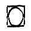
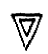
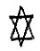
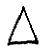
(정답률: 56%)
23. T Q C (Total Quality Control)란?
- 시스템적 사고방법을 사용하지 않는 품질관리 기법이다.
- 아프터 서비스를 통한 품질을 보증하는 방법이다.
- 전사적인 품질정보의 교환으로 품질향상을 기도하는 기법이다.
- QC부의 정보분석 결과를 생산부에 피드백하는 것이다
(정답률: 60%)
24. 계수값 관리도는 어느 것인가?
- R관리도
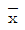
관리도- P관리도
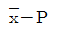
관리도
(정답률: 49%)
25. 클러치가 미끄러지지 않기 위한 조건은? (단, 클러치 압력스프링의 장력 t, 마찰 계수 μ , 평균반경 r, 회전력 T인 경우)
- t· μ · r ≦ T
- T· μ · r ≧ t
- t· μ · r ≧ T
- T· μ · r ≦ t
(정답률: 68%)
26. 토인의 필요성 중 설명이 틀린 것은?
- 앞바퀴를 평행하게 직진시키기 위해서
- 수직방향 하중에 의한 앞차축 휨을 방지하기 위하여
- 앞바퀴의 옆미끄럼과 마멸을 방지하기 위하여
- 조향기구의 마멸에 의한 토아웃을 방지하기 위하여
(정답률: 77%)
27. 제동장치에서 마스터 백은 무엇을 이용하여 브레이크에 배력작용을 하게 한 것인가?
- 배기가스 압력 이용
- 대기 압력만 이용
- 흡기 다기관의 압력만 이용
- 대기압과 흡기 다기관의 압력차 이용
(정답률: 92%)
28. 디스크 브레이크의 특징을 설명한 것 중 적당치 않은 것은?
- 고속에서 사용하여도 안정된 제동력을 발휘한다.
- 안정된 제동력을 얻기가 비교적 어렵다.
- 디스크가 노출되어 회전하므로 방열성이 좋다.
- 마찰면적이 적기 때문에 패드를 압착하는 힘을 크게 하여야 한다.
(정답률: 86%)
29. 자동차가 54 km/h로 달리다가 급가속하여 10초후에 90km/h가 되었을 때, 가속도는 얼마인가?
- 2 m/sec2
- 1 m/sec2
- 3 m/sec2
- 4 m/sec2
(정답률: 46%)
30. 변속기 내의 록킹 볼이 하는 역할이 아닌 것은?
- 시프트 포크를 알맞는 위치에 고정한다.
- 기어가 빠지는 것을 방지한다.
- 시프트 레일을 알맞는 위치에 고정한다.
- 기어가 2중으로 치합되는 것을 방지한다.
(정답률: 76%)
31. 동력전달 장치를 통하여 바퀴를 돌리면 구동축은 그 반대방향으로 돌아가려는 힘이 작용하는데 이 작용력을 무엇이라고 하는가?
- 코어링 포스
- 휠 트램프
- 윈드 업
- 리어 앤드 토크
(정답률: 52%)
32. 자동 변속기에서 댐퍼 클러치(록 업클러치)의 기능이 아닌 것은?
- 저속시나 급출발시 작용한다.
- 펌프와 터빈을 기계적으로 직렬시킨다.
- 동력 전달시 미끄럼 손실을 최소화한다.
- 연료 소비율 향상과 정숙성을 도모한다.
(정답률: 64%)
33. 자동 변속기에서 동력을 한쪽 방향으로 자유롭게 전달하지만 반대 방향으로는 전달하지 못하는 기구를 무엇이라고 하는가?
- 다판 클러치
- 일방향 클러치
- 브레이크 밴드
- 토크 컨버터
(정답률: 75%)
34. 조향핸들을 2회전 시켰더니 피트먼암은 30° 회전하였다. 조향기어비를 구하면?
- 24:1
- 15:1
- 60:1
- 12:1
(정답률: 47%)
35. 자동차의 검사항목 중 정기검사시 검사항목이 아닌 것은?
- 조종장치
- 주행장치
- 동일성 확인
- 차체 및 차대
(정답률: 66%)
36. 차량이 선회시 원심력에 의한 횡요동(롤링)을 억제하기 위한 토션 바로서, 독립현가식 서스펜션에 사용하고 있으며, 이러한 롤링을 감소하고 차체의 평행을 유지하기 위한 구성품의 명칭은?
- 스테빌라이저(stabilizer)
- 에어 스프링(air spring)
- 코일 스프링(coil spring)
- 토션바 스프링(torsion bar spring)
(정답률: 75%)
37. ABS 시스템에서 스피드센서에 의해 4륜 각각의 차륜속도 및 차륜 감가속도를 연산하여 차륜의 슬립상태를 판단하며 각종 솔레노이드 밸브에 대한 증압 및 감압형태를 결정하는 부품은?
- 모터 및 펌프(MOTOR & PUMP)
- ABS ECU
- 하이드로릭 유니트
- EBD
(정답률: 77%)
38. 다음 보기의 회로는 전자제어 현가장치의 어떤 센서인가?
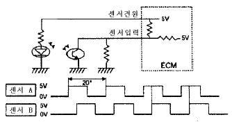
- G 센서
- 공기 압력 센서
- 차고 센서
- 조향 각 센서
(정답률: 71%)
39. 구동력 조절장치(traction control system)의 제어 방식으로 틀린 것은?
- 엔진 토크 제어
- 유압 반력 제어
- 브레이크 토크 제어
- 차동 장치 제어
(정답률: 58%)
40. 타이어 트레드패턴(tread pattern)의 필요성에 대한 설명이 틀린 것은?
- 공기누설을 방지한다.
- 타이어 내부에서 발생한 열을 방산한다.
- 트레드에 발생한 파손이나 손상 등의 확산을 방지한다.
- 사이드 슬립(side slip)이나 전진방향의 미끄럼을 방지한다.
(정답률: 84%)
3과목: 임의구분
41. 하중이 2ton이고 압축스프링 변형량이 2cm일 때 스프링 상수는 얼마인가?
- 100 kgf/mm
- 120 kgf/mm
- 150 kgf/mm
- 200 kgf/mm
(정답률: 70%)
42. 다음 중 풀 에어 브레이크(Full Air Brake) 시스템의 구성부품이 아닌 것은?
- 투 웨이 밸브
- 로드센싱 밸브
- 휠 실린더
- 릴레이 밸브
(정답률: 49%)
43. 전자제어 동력 조향장치에서 콘트롤 유니트(CU)로 입력되는 항목으로 맞는 것은?
- 냉각수온 신호
- 차속 신호
- 자동변속기 D레인지 신호
- 에어콘 작동 신호
(정답률: 71%)
44. 자동차 에어콘 시스템의 구성품 중 리시버드라이어의 역할이 아닌 것은?
- 팽창밸브로 들어가는 냉매 중의 기포분리 저장
- 냉매 중에 함유되어 있는 수분이나 이물질 제거
- 압축기에 들어가는 냉매 중 액체상태의 냉매 분리 저장
- 냉매의 온도나 압력이 비정상적으로 높을 때 안전판 역할
(정답률: 42%)
45. 트랜지스터 전압 조정기는 기존의 접점식에 비해 여러가지 장점이 있다. 이 중에서 틀린 것은?
- 스위칭 타임이 짧아 제어 공차가 적다.
- 전자식 온도 보상이 가능하므로 제어공차가 적다.
- 스위칭 전류가 크기 때문에 레귤레이터의 이용 범위가 넓다.
- 충격과 진동에 약하다.
(정답률: 75%)
46. 축전지의 충전 및 방전의 화학식이다. ( )속에 알맞는 화학식은?
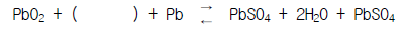
- H2O
- 2H2O
- 2PbSO4
- 2H2SO4
(정답률: 67%)
47. 다음 중 그로울러 시험기로 시험할수 없는 것은?
- 전기자 코일의 단락
- 코일 밸런스
- 전기자 코일단선
- 계자코일의 단락
(정답률: 52%)
48. 4기통 디젤기관에 저항이 0.5Ω 인 예열플러그를 각기통에 병렬로 연결하였다. 이 기관에 설치된 예열 플러그의 합성저항은 몇 Ω 인가? (단, 기관의 전원은 24V 임)
- 0.13
- 0.5
- 2
- 12
(정답률: 44%)
49. 점화플러그 절연재로 가장 많이 사용되는 것은?
- 산화알루미늄(Al2O3)
- 자기(Porcelain)
- 스티어타이트(H2O.3MgO.4SiO2)
- 유리
(정답률: 64%)
50. 전자식 현가장치(ECS)에서 앤티롤(Anti Roll) 제어가 불량해 지는 원인과 관계 없는 것은?
- 조향각 센서의 불량
- 차속 센서의 불량
- 유량 절환 밸브의 불량
- 제동등 스위치의 불량
(정답률: 73%)
51. 자동차 편의장치(ETACS, ISU)는 어떠한 기능을 작동시키기 위해서 각종 신호를 입력받아 상황을 판단한 후 출력 제어를 한다. 다음 중 에탁스 입력 요소 중 옳지 않은 것은?
- 열선 스위치
- 감광식 룸램프
- 차속센서
- 와셔 스위치
(정답률: 59%)
52. 점화코일의 1차코일 저항값이 20Ω일때 5Ω이었다. 작동시(80Ω)의 저항은?(단, 구리선의 저항온도계수는 0.004이다.)
- 5.24Ω
- 4.76Ω
- 5.76Ω
- 4.24Ω
(정답률: 26%)
53. 차체에서 화이트 보디(White body)를 구성하는 부품 중 틀린 것은?
- 사이드 보디
- 도어(앞,뒤문짝)
- 범퍼
- 엔진 후드, 트렁크 리드
(정답률: 68%)
54. 손상된 보디를 기본적인 고정을 하고 인장 작업을 위해 추가적인 고정을 하는 이유가 아닌 것은?
- 보디 중심에 필요한 회전 모멘트를 발생하기 위해서
- 과도한 인장력을 방지하기 위해서
- 스포트 용접부를 보호하기 위해서
- 고정한 부분까지 힘을 전달하기 위해서
(정답률: 55%)
55. 점 용접 3단계의 순서로 맞는 것은?
- 가압 → 냉각고착 → 통전
- 냉각고착 → 가압 → 통전
- 가압 → 통전 → 냉각고착
- 통전 → 가압 → 냉각고착
(정답률: 66%)
56. 자동차의 하중 분포를 계산하여야 할 작업이 아닌 것은?
- 오버 항 연장
- 라디에이터 길이 연장
- 휠 베이스의 연장
- 하대 개조 및 하대 옵셋의 변경
(정답률: 88%)
57. 상도 도장작업 중에 에어 스프레이 건에서 조절이 가능한 것이 아닌 것은?
- 도료의 토출량 조절
- 에어량 조절
- 패턴 사이즈 조절
- 노즐 사이즈 조절
(정답률: 55%)
58. 도장 작업 후 열처리 시에 부스의 온도를 급격하게 올렸을 때 나타날 수 있는 도장 문제점은?
- 오랜지 필
- 주름 현상
- 핀홀 또는 솔벤트 퍼핑
- 백화 현상
(정답률: 72%)
59. 메탈릭 색상의 조색에서 차체색상보다 도료색상이 어두워 원색도료를 투입하고자 한다. 적당한 조색제는?
- 백색
- 투명 백색
- 회색
- 알루미늄(실버)
(정답률: 87%)
60. 도료 중 요철부위의 메꿈역할과 맨 철판에 대한 부착기능 및 연마에 의한 표면조정을 위해 도장하는 도료는?
- 퍼티
- 프라이머
- 서페이서
- 우레탄
(정답률: 75%)